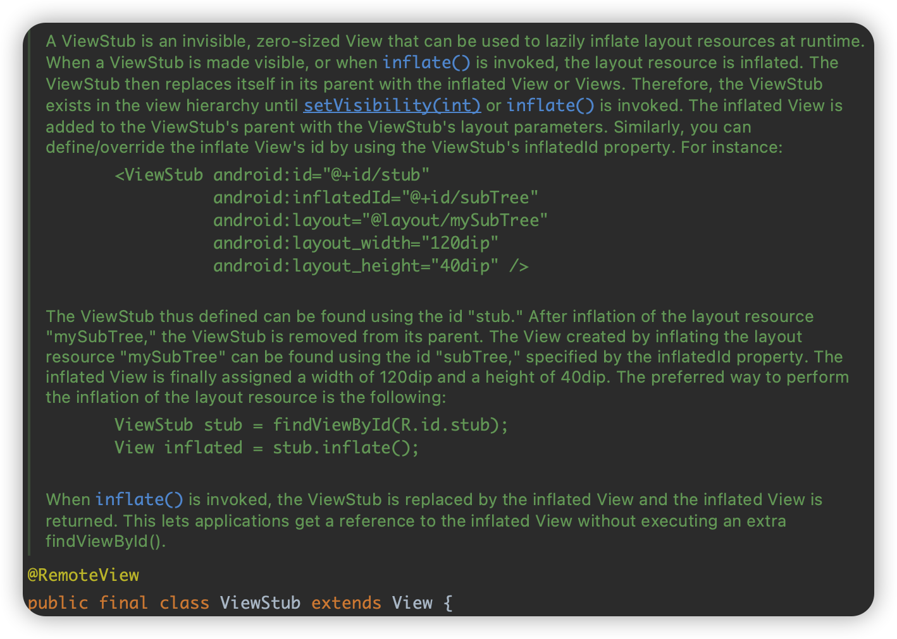
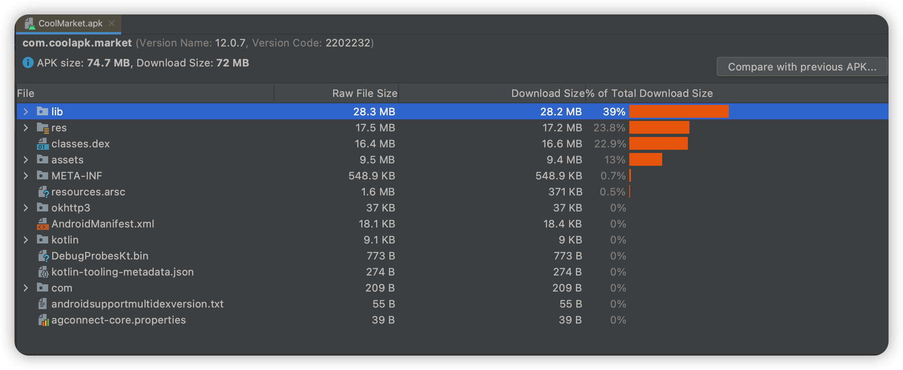

Android面试之《性能优化》总结。对于简单部分，只做总结。至于难点，将做进一步分析与记录。
常见的Android性能优化，大致有如下几大模块（细分小模块）：
- 稳定性（如：内存溢出/泄漏、崩溃）=>
Crash与ANR- 流畅度（如：卡顿——UI(布局+绘制)、线程优化、响应速度）
- 耗损（如：耗电、流量、网络）=>
代码质量与逻辑- 安装包（如：APK瘦身）
（一）优化：《稳定性》
众所周知，Java开发一般不需要手动分配内存和释放内存，这得感谢Java底层机制——JVM及其GC。交由虚拟机帮助分配和释放，但因此导致开发者编程不规范或者不严谨，易出现内存泄漏和内存溢出。
Android操作系统对整个设备内存做了一个大致的全局把控：
- 每个App都分配
Dalvik Heap Size，表示系统分配给每个App内存的最大限制阈值。此阈值在不同厂商设备是不一样的，查看方式如：
➜ ~ adb shell getprop | grep heap [dalvik.vm.heapgrowthlimit]: [256m] [dalvik.vm.heapmaxfree]: [2m] [dalvik.vm.heapminfree]: [512k] [dalvik.vm.heapsize]: [256m] [dalvik.vm.heapstartsize]: [5m] [dalvik.vm.heaptargetutilization]: [0.75]总之，Android对每个App限制内存大小：
- 对应Java代码的
Runtime.getRuntime().maxMemory()。- 即
/system/build.prop中的如下选项值：
dalvik.vm.heapgrowthlimit：当配置清单的<application android:largeHeap="false" 或缺省 .../>时，用这个。dalvik.vm.heapsize：当配置清单的<application android:largeHeap="true" .../>时，用这个。
超出该限制再继续申请，则OOM。
所以，Java开发不需要对内存手动分配与释放，但 需要合理的内存管理 。
【稳】内存优化点
- 避免内存泄漏（★★★★★）
- 优化内存空间
- 合理利用对象引用，以助 GC 合理回收。如：强/软/弱/虚。
- 减少不必要的内存开销：
- 慎用自动装箱。如：一个 int 占 4bytes，则一个 Integer 占 16bytes。
- 慎用枚举。 Enum易读且安全，但过度使用在性能上却不如普通常量定义。Android中，枚举内存是常量2~3倍+。
- 内存复用：
- 充分利用系统内置资源。 如：
strings/colors/icons/animation/simple-layout等，还能优化apk大小。- 充分利用Android特有数据结构。 如：
SparceArray/Pair等。- 视图复用。 如：
ViewHolder实现ContentView复用等。- 对象池。 如：
线程池、消息池等，对象重用以减少对象创建，避免内存抖动等。Bitmap对象复用。 利用 Bitmap 中的inBitmap高级特性，提高系统在 Bitmap 的分配与释放效率，不仅可以复用内存，还能提高读写速度。该特性可以在已经的内存区域中申请一块区域来存放 Bitmap。（★★★★★）=> PS：有待更深研究~~~~ListView/RecycleView优化。LruCache缓存。- 图片内存优化：以设置位图规格，根据“采样因子”做压缩，用一些图片缓存方式（如
LruCache）对图片进行管理等等。 由于每个App被分配的 dalvik heap size 有限制，而且图片资源又相对耗内存。所以，解决好图片内存优化，是Android开发中的一大重要模块！！！（参考：https://blog.csdn.net/haha223545/article/details/95349267）
1. 内存泄漏
归类一下，常见的内存泄漏有：
- 容器中无用对象未清理造成的泄漏
- 单例/
static变量造成的内存泄漏- 内部类(
匿名、非静态)- 资源未关闭/注册未解注册造成的内存泄漏
Webview引起的内存泄漏Handler引起的内存泄漏- 多线程引起的内存泄漏
1.1 容器中无用对象未清理造成的泄漏
容器中添加对象，当不再需要该对象时，并没有将其引用从容器（集合）中清理掉，就会导致集合容器越来越大。如果该集合容器是 static 的话，情况就更严重。
👉🏻容器引发泄漏的解决方案：
在
Activity退出前，将集合里的东西clear，然后置为null，再退出程序。如：@Override public void onDestroy() { xxxList.clear(); xxxList = null; super.onDestroy(); }
1.2 单例/static变量造成的内存泄漏
static 变量长期维持对象引用，阻止 GC 回收。当 static 变量持有的是大数据对象，如 Bitmap/Context/View/... 等，就更容易引起泄漏等问题。
如，单例中可能会出现 private static Context sContext ，如果该 Context 是 Activity 类型，则就必定出现 leak，此时可以在传入的 Activity Context 参数中，使用 context.getApplicationContext() ，这样就和 Activity 没有关系，也不存在内存泄漏了。
尽量用
Application Context代替Activity Context。
1.3 内部类(匿名、非静态)
总之，内部类易造成内存泄漏的根本原因是：内部类可持有外部类引用（这也是内部类的特点~~）。
例如，常见的非静态内部类和匿名内部类，编写不好基本就内存泄漏了：
Handler、TimerTask、AsyncTask、Thread……👉🏻总之，Android中解决
Activity内部类内存泄漏的方案为：
- 使用
Application Context代替Activity Context，让生命周期与APP一样长，就可避免了。- 非静态内部类要引用
Actiity，则优先软引用。- 慎用
static声明Context对象！！！
1.3.1 匿名内部类引发内存泄漏
代码解释：
public class OuterClass extends Activity {
@Override
public void onCreate(Bundle savedInstanceState)
...
new Thread(new Runnable() {
@Override public void run() {
...//可持有 OuterClass 引用。。。
}
}).start();
}
匿名内部类 leak 原理同 no-static内部类 ，解决方案为：
改为：静态内部类。
1.3.2 非静态内部类引发内存泄漏
一个
no-static内部类对象实例被声明 成static，则其就默认拥有了外部类的实例引用，也即是其生命周期大于外部引用，和整个应用存活的生命周期一样长了。显然，就导致了内存泄漏。代码解释：
public class OuterClass extends Activity { public class InnerClass {...} private static InnerClass sInnerClazz = null; @Override public void onCreate(Bundle savedInstanceState) sInnerClazz = new InnerClass(); }说明：Activity 每次启动都会使用 InnerClass。而 InnerClass 本身为 no-static 内部类已经持有外部类 OuterClass 的引用了，但在声明对象时用 static 声明了，这又表明了该 no-static-inner-class 又变成与整个应用寿命一样长了，远大于 Activity 了，所以当前 Activity 占用的内存资源根本不可能被正常回收，久而久之就造成了内存泄漏，进而OOM。
总之，无论是匿名内部类还是非静态内部类，都是 因为可持有外部类引用并生命周期大于外部引用的生命周期 。所以，解决办法都是一个方向。
👉🏻匿名内部类、非静态内部类声明成
static对象引用的解决方案：
- 『匿名内部类』：改为 静态内部类，如：
- 『非静态内部类声明成
static对象引用』：改为 内部通过软引用/弱引用加强。总之，这两种情况的内部类 leak 解决方案，可终极为一个：
优化为：
静态内部类 + 软引用/弱引用 内部持有外部引用的严格加强！public class OuterClass extends Activity { private static class InnerClass { private WeakReference<Context> myContext; public InnerClass(Context context) { myContext = new WeakReference<Context>(context) } public void foo() { if (null != myContext.get()) { ... } } } }
1.4 资源未关闭/注册未解注册造成的内存泄漏
- 资源性对象，诸如
Cursor/File/IO流操作/...往往都使用了缓冲。且。当不再使用时，应及时关闭，以便它们的缓冲（缓存对象）及时回收内存，而非等待GC来处理。因它们的缓存不仅存在于 JVM 内，还存在于 JVM 之外。所以，如果只是简单的置为null，而不关闭它们，就会造成内存泄漏。- 若事件（诸如
BroadcastReceiver/注册观察者等如EventBus）注册后未解注册，会导致观察者列表中维持着对象的引用，阻止GC回收。
一般示例写法：
try {
...
} catch (Exception e) {
e.printStackTrace();
} finally {
if (null != xxx) {
xxx.close();
xxx = null;
}
if (null != yyy) {
yyy.unregister();
yyy = null;
}
}
1.5 WebView 引起的内存泄漏
Android-WebView 除了兼容和性能上的问题外，不同版本和不同定制ROM也有很大差异。更重要地，WebView 都存在内存泄漏，哪怕在应用中使用过一次，内存就不会被释放掉。
解决
WebView内存泄漏方案：
- 为
WebView所在的Activity开启新的独立进程（android:process=":<process_name>"），与主进程通信则通过AIDL方式。且可根据业务需要选择合适时机进行销毁该独立进程，以达到正常释放内存目的。👉🏻终极暴力解决（完美有效）👈🏻：
在WebViewActivity.onDestroy()中System.exit(0)杀死当前进程，即直接退出dvm。@Override public void onDestroy() { super.onDestroy(); System.exit(0);//android.os.Process.killProcess(android.os.Process.myPid());不太管用~ }最后，附上常规的 WebView 优化方案（兼容所有释放）：
@Override public void onDestroy() { try { // 1. 注册的 services/monitors/handlers/... 及时移除并置null。 unregisterReceiver(mXXXReceiver); mXXXReceiver = null; // 2. 如当前页面有 ImageView，也要及时回收并销毁。如，背景大图，主动回收。 if (mIVBackground != null) { Drawable drawable = mIVBackground.getDrawable(); if (drawable instanceof BitmapDrawable) { BitmapDrawable bitmapDrawable = (BitmapDrawable) drawable; Bitmap bitmap = bitmapDrawable.getBitmap(); if (bitmap != null && !bitmap.isRecycled()) { bitmap.recycle(); } } // ImageView的父组件必须移除此ImageView： mIVBackground.getParent().removeView(mIVBackground); mIVBackground = null; } // 最后，清除 WebView 组件缓存并销毁 if (mWebView != null) { mWebView.stopLoading(); mWebView.clearHistory(); mWebView.removeAllViewsInLayout(); mWebView.removeAllViews(); mWebView.setWebViewClient(null); mWebView.destroy(); mWebView = null; } } catch (Exception e) { e.printStackTrace(); } finally { // 最后，执行 super.onDestroy 并 System.exit(0) 退出 dvm 进程！ super.onDestroy(); System.exit(0);//android.os.Process.killProcess(android.os.Process.myPid());不太管用~ } }
PS：特别注意，如果你使用的是腾讯浏览器服务（TBS）X5WebView 的话，则无需像上面那样繁琐，官方API给定一句调用并保证即可一次全部清除完毕：
@Override public void onDestroy() {
QbSdk.clearAllWebViewCache(this, true);
super.onDestroy()
}
扩展，
TBS-X5WebView使用：(引用自https://www.jianshu.com/p/93970d419bc7)
- 添加依赖：
dependencies { api 'com.yanzhenjie:permission:2.0.3' api 'com.tencent.tbs.tbssdk:sdk:43939' // 腾讯X5WebView implementation "org.jetbrains.kotlin:kotlin-stdlib:$kotlin_version" implementation 'androidx.core:core-ktx:1.2.0' implementation 'androidx.appcompat:appcompat:1.1.0' implementation 'com.google.android.material:material:1.1.0' implementation 'androidx.constraintlayout:constraintlayout:1.1.3' testImplementation 'junit:junit:4.+' androidTestImplementation 'androidx.test.ext:junit:1.1.1' androidTestImplementation 'androidx.test.espresso:espresso-core:3.2.0' }
AndroidManifest.xml配置service：<service android:name="com.tencent.smtt.export.external.DexClassLoaderProviderService" android:label="dexopt" android:process=":dexopt" > </service>
Application类中初始化TBS：import android.app.Application; import com.tencent.smtt.export.external.TbsCoreSettings; import com.tencent.smtt.sdk.QbSdk; import java.util.HashMap; public class BaseApplication extends Application { @Override public void onCreate() { super.onCreate(); initX5WebView(); } /** * 初始化x5WebView */ private void initX5WebView() { // 搜集本地tbs内核信息并上报服务器，服务器返回结果决定使用哪个内核。 QbSdk.PreInitCallback cb = new QbSdk.PreInitCallback() { @Override public void onViewInitFinished(boolean arg0) { // x5內核初始化完成的回调，为true表示x5内核加载成功，否则表示x5内核加载失败，会自动切换到系统内核。 LogUtils.d("onViewInitFinished is "+arg0); } @Override public void onCoreInitFinished() { } }; // x5内核初始化接口 QbSdk.initX5Environment(this, cb); // 在调用TBS初始化、创建WebView之前进行如下配置 HashMap map = new HashMap(); map.put(TbsCoreSettings.TBS_SETTINGS_USE_SPEEDY_CLASSLOADER, true); map.put(TbsCoreSettings.TBS_SETTINGS_USE_DEXLOADER_SERVICE, true); QbSdk.initTbsSettings(map); } }
- 在
Activity中使用：import androidx.appcompat.app.AppCompatActivity import android.os.Bundle import com.tencent.smtt.sdk.QbSdk import com.tencent.smtt.sdk.WebChromeClient import com.tencent.smtt.sdk.WebView import com.yanzhenjie.permission.AndPermission import com.yanzhenjie.permission.runtime.Permission import kotlinx.android.synthetic.main.activity_main.* class MainActivity : AppCompatActivity() { override fun onCreate(savedInstanceState: Bundle?) { super.onCreate(savedInstanceState) setContentView(R.layout.activity_main) AndPermission.with(this) .runtime() .permission(Permission.WRITE_EXTERNAL_STORAGE, Permission.READ_PHONE_STATE) .onGranted { } .onDenied { } .start() // 加载进度 forum_context.webChromeClient = object : WebChromeClient() { override fun onProgressChanged(p0: WebView?, p1: Int) { super.onProgressChanged(p0, p1) LogUtils.d(p1) } } forum_context.settings.javaScriptEnabled = true // 开启js forum_context.settingsExtension.setDisplayCutoutEnable(true) // 刘海屏适配 forum_context.loadUrl("https://www.baidu.com") // 加载url } override fun onDestroy() { QbSdk.clearAllWebViewCache(this, true) // 清除缓存 super.onDestroy() } }
activity-布局文件：<?xml version="1.0" encoding="utf-8"?> <LinearLayout xmlns:android="http://schemas.android.com/apk/res/android" xmlns:app="http://schemas.android.com/apk/res-auto" xmlns:tools="http://schemas.android.com/tools" android:layout_width="match_parent" android:layout_height="match_parent" tools:context=".MainActivity"> <com.tencent.smtt.sdk.WebView android:id="@+id/forum_context" android:layout_width="fill_parent" android:layout_height="fill_parent" /> </LinearLayout>
另外，也可动态添加 WebView，如：
// 动态添加Webview（X5WebView） LinearLayout.LayoutParams params = new LinearLayout.LayoutParams(LinearLayout.LayoutParams.MATCH_PARENT, LinearLayout.LayoutParams.MATCH_PARENT); WeakReference weakReference = new WeakReference(this); //使用弱引用去持有当前Activity X5WebView webView = new X5WebView((Context) weakReference.get(),null); webView.setLayoutParams(params); mWebviewLayout.addView(webView);
1.6 Handler 引起的内存泄漏
代码讲解：
public class DemoActivity extends Activity {
Handler mHander = new Handler() {
public void handleMessage() {...}
}
}
如上代码就是一个内存泄漏代码，咱们来细说一下：
首先，
mHandler是一个non-static-匿名内部类__实例，所以其一定持有外部类（DemoActivity）的引用。且又因消息队列是在一个Looper线程中不断轮询处理消息，那就存在一种情况，当该DemoActivity退出时（此时，消息可能延迟、或其他原因还未处理的情况），MessageQueue中的Message持有mHandler实例引用，而mHandler又持有DemoActivity引用，最终导致该Activity的内存资源无法及时回收，从而引发内存泄漏。
👉🏻Handler内存泄漏的解决方案：
- 在
Activity销毁（onDestroy()）时，移除MessageQueue中的消息，以避免Looper线程的MessageQueue中有待处理的Message。如：@Override public void onDestroy() { mHandler.removeCallbacks(xxxRunnable); // 移除指定消息 mHandler.removeCallbacksAndMessages(null); // 移除所有 Callbacks 和 Messages }- 使用
static-Handler-内部类，然后对Handler持有的对象使用弱引用。当 GC 时，就可以回收 Handler 持有的对象了。如：public class MyActivity extends Activity { private MyHandler mHander = new MyHandler(this); public void onDestroy() { mHandler.removeCallbacksAndMessages(null); } private static class MyHandler extends Handler { private WeakReference<Context> context = null; public MyHandler(Context context) { this.context = new WeakReference<Context>(context); } public void handleMessage() { } } }
1.7 多线程引起的内存泄漏
常见的由线程引起的 leak 有：Runnable(Thread)、AsyncTask ……
1.7.1 Runnable(Thread)
当异步线程持有外部 Activity 的引用，若线程未执行完用户就退出 Activity 了，处理不好线程的归宿就会引发 leak，这是多线程编程中最容易出现的！
👉🏻多线程如
Runnable的内存泄漏解决方案：确保Activity销毁前终止线程。一般我们是使用
Handler+Thread，则可通过mHandler.removeCallbacks(xxxRunnable) 或 mHandler.removeCallbacksAndMessages(null)来移除异步线程！
当然，推荐使用RxJava更容易~~
1.7.2 AsyncTask
AsyncTask = Handler + Thread。leak 原理类同 Runnable，Activity 销毁前 doInBackground() 未得到停止。
👉🏻多线程如
AsyncTask的内存泄漏解决方案：推荐使用cancel() + isCancelled()！
- 若 AsyncTask 任务
还未开始且cancel，则能立即取消任务且不会执行；- 若 AsyncTask 任务
已开始且cancel，则不能终止线程（直到doInBackground()完毕），cancel只能让onPostExecute()不被执行；
因此，cancel不会终止正在运行的线程，只会给 AsyncTask 设置cancelled状态，通知该线程应该中断了（注意只是应该）。
所以，使用cancel是还要检查当前 task 状态（isCancelled()），保证其及时退出：@Override protected Integer doInBackground(Void... args) { // Task被取消了，马上退出 if(isCancelled()) return null; ... // Task被取消了，马上退出 if(isCancelled()) return null; }PS：
AsyncTask已过时，不使用高级封装前提下（如：RxJava），还不如直接使用Handler更好控制。
2. 优化内存空间
2.1 合理利用对象引用（强/软/弱/虚）
- 内部类（非静态+匿名）内存泄漏优化时：可使用
软引用处理Activity。 - 图片优化时：亦可使用
软引用处理Bitmap。 - 自定义App的
Activity任务栈时：可使用软引用存储Activity，出栈销毁前可判断，也避免内存泄漏。
2.2 减少不必要内存开销
2.2.1 慎用枚举，Google推荐 @IntDef 和 @StringDef 替代
Google官方推荐在Android中使用
@IntDef和@StringDef替代枚举类型。
第一步，添加依赖：
compile 'com.android.support:support-annotations:25.1.0'第二步，定义常量 -> 声明构造方法（
@IntDef/@StringDef包裹所有常量并声明@Rentention为SOURCE策略）->@XXX式声明public class MainActivity extends Activity { // step-1：先定义 常量 public static final int Jan = 1; public static final int Feb = 2; public static final int Mar = 3; public static final int Apr = 4; public static final int May = 5; public static final int Jun = 6; public static final int Jul = 7; public static final int Aug = 8; public static final int Sep = 9; public static final int Oct = 10; public static final int Nov = 11; public static final int Dec = 12; // step-2：声明构造器，用 @IntDef "包住" 常量并 @Retention 定义策略 @IntDef({Jan, Feb, Mar, Apr, May, Jun, Jul, Aug, Sep, Oct, Nov, Dec}) @Retention(RetentionPolicy.SOURCE) public @interface Months {} @Months int mNowMonth = Jan; @Override protected void onCreate(Bundle savedInstanceState) { super.onCreate(savedInstanceState); setContentView(R.layout.activity_main); setNowMonth(Jan); //声明变量 @Months int currentMonth = getCurrentMonth(); switch (currentMonth){ case Jan: break; case Feb: break; ... default: break; } } public void setCurrentMonth(@Months int currentMonth) { this.currentMonth = currentMonth; } @Months public int getCurrentMonth() { return mCurrentMonth; } }
再如，Toast 源码，就是使用 @IntDef 方式：
// android.widget.Toast.java // public class Toast { static final String TAG = "Toast"; static final boolean localLOGV = false; /** @hide */ @IntDef(prefix = { "LENGTH_" }, value = { LENGTH_SHORT, LENGTH_LONG }) @Retention(RetentionPolicy.SOURCE) public @interface Duration {} /** * Show the view or text notification for a short period of time. This time * could be user-definable. This is the default. * @see #setDuration */ public static final int LENGTH_SHORT = 0; /** * Show the view or text notification for a long period of time. This time * could be user-definable. * @see #setDuration */ public static final int LENGTH_LONG = 1; ...
2.2.2 对象池、线程优化（线程池）
线程池，即是对象池中的一种。都是为了避免频繁创建对象与销毁对象，造成内存抖动，进而引发 OOM 。所以，使用线程池，是对象可重复利用的表现。
常见的对象池有：
- 消息池。请用：
Message msg = Message.option()- 线程池。请用：
ThreadPoolExecutor 和 ScheduledThreadPoolExecutor这两个Java中的线程池。
其中，最需要注意的是 线程池 使用。多线程操作与执行，其实是进程的最小颗粒（线程）在对 CPU 时间片获取进行抢占式争夺。如果自己创建 Thread 不光有内存抖动风险，还有 CPU 资源竞争死锁问题。所以，推荐尽量采用线程池创建 Thread 对象。
2.3 ListView/RecycleView 优化
列表组件优化步骤：
- 使用ViewHolder模式来提高效率
- 异步加载：耗时的操作放在异步线程中
ListView/RecycleView滑动中请分页加载和停止加载（如：图片、信息填充等）
ListView 优化参考：ListView的优化
2.4 LruCache 缓存
LruCache，位于
android-support-v4/android.uti.LrueCache包下。
LruCache算法，又称为近期最少使用算法。
LruCache 中 Lru 算法的实际上是通过 LinkedHashMap 来实现的。LinkedHashMap 继承于 HashMap，它使用了一个双向链表来存储 Map 中的 Entry 顺序关系，对于 get、put、remove 等操作，LinkedHashMap 除了要做 HashMap 做的事情，还做些调整 Entry 顺序链表的工作。
LruCache 中将 LinkedHashMap 的顺序设置为 LRU 顺序来实现 LRU 缓存，每次调用 get(也就是从内存缓存中取图片)，则将该对象移到链表的尾端。调用 put 插入新的对象也是存储在链表尾端，这样当内存缓存达到设定的最大值时，将链表头部的对象（近期最少用到的）移除。
2.5 图片内存优化（Bitmap）
大图占用内存，容易 OOM。故，
👉🏻图片内存优化一般策略：
1. 等比（或指定缩小因子）缩小图片：
BitmapFactory.Options options = new BitmapFactory.Options(); options.inSampleSize = 2; // 图片宽高都为原来的 1/2，即图片为原来的 1/42. 对图片使用软引用，并及时
recycle：SoftReference<Bitmap> bitmap = new SoftReference<Bitmap>(xxxBitmap); if(bitmap != null) { if(bitmap.get() != null && !bitmap.get().isRecycled()){ bitmap.get().recycle(); bitmap = null; } }
（一）Bitmap 优化①——『尺寸压缩』（inSampleSize 采样率方式），避免OOM（★★★★★）
Android图片编程中，编码不好就会容易出现如下：
java.lang.OutofMemoryError:bitmap size exceeds VM budget
Bitmap 图片的优化压缩有多种方式，且应对于不同场景，例如常用的有：
- 质量压缩（
不会改变尺寸）。boolean isAlreadyCompressedToStream = bitmapObj.compress(CompressFormat format, int quality, OutputStream stream) - 尺寸压缩（
改变尺寸宽高）：有采样率inSampleSize、直接创建Bitmap.createBitmap(提供width和height...)等方式。 - LibJpeg 压缩。
ps：本篇主要对图片尺寸 采样率inSampleSize 压缩做详解，其它另外篇幅再做分析。
这是由于 Android 系统给每个 App DVM 分配内存有限制大小，如果加载 Bitmap ，极容易出现 OOM（Out of Memory）。
所以，如何高效加载
Bitmap就有必要了，基核心思想为：
- 原因：使用
ImageView来显示图片，大多数情况下ImageView并没有原始图片尺寸那么大。若这时把整个原始图片加载并设置给ImageView的话，是没有必要的，况且ImageView也无法显示出原图。- 解决方案：可按一定
采样率将图片缩小再加载进内存，最后再设置给ImageView。这样图片在ImageView上既能显示，又能降低内存并一定程度避免OOM，自然而然提升了Bitmap的加载性能！👉🏻首先，把如何高效加载
Bitmap的核心流程归纳一下：
- 首先，设置参数
BitmapFactory.Options.inJustDecodeBounds = true（true：只加载图片信息并不加载进入dvm内存！）并加载图片；- 从
Options中取出图片 原始宽高，即对应options.outWidth、options.outHeight属性；- 根据
采样率规则并结合目标ImageView所需大小计算出采样率 inSampleSize；- 最后，归置参数
BitmapFactory.options.inJustDecodeBounds = false（false：会加载图片且计入dvm内存！），然后BitmapFactory.decodeXXX(...)得到压缩后的Bitmap，并用于设置给ImageView显示。
1. 加载 Bitmap 的方式（共 4 种：BitmapFactory.decodeXXX(...)）
加载 Bitmap 主要由工厂类 BitmapFactory 提供，名为 BitmapFactory.decodeXXX(...) --> BitmapFactory.nativeDecodeXXX(...)，主要有 4 类：
BitmapFactory.decodeFile(...)：从文件加载得到Bitmap对象。BitmapFactory.decodeResource(...)：从资源加载得到Bitmap对象。BitmapFactory.decodeStream(...)：从输入流加载得到Bitmap对象。BitmapFactory.decodeByteArray(...)：从字节数组加载得到Bitmap对象。
其中，decodeFile/decodeResource间接调用了decodeStream（但是 resource->stream 还多了个中间步骤）。且这 4 类方法都分别对应有 native 方法BitmapFactory.nativeDecodeXXX(...)。decodeFile --> decodeStream decodeResource --> decodeResourceStream..在此设置处理一些options --> decodeStream
2. BitmapFactory.Options 参数
① inSampleSize 参数
以上加载的 4 种方式，都支持带 Options 参数的重载方法，即 BitmapFactory.decodeXXX(..., @Nullable Options opts) （当然，对应的 native 肯定是有 Options 参数的）。
Bitmap 缩放处理都是通过
Options参数实现。主要用到了inSampleSize，即采样率。通过设置采样率，以达到对**图片像素**的**宽、高**进行缩放：
- 当
inSampleSize ≤ 1时，即采样后图片大小仍为图片原始大小尺寸。<1，也按=1处理。- 当
inSampleSize > 1时，即采样后的图片将会缩小，缩放比为1/inSampleSize的2次方（因：宽和高都分别缩小了inSmapleSize！！！）例如，一张 1024*1024 像素的图片，采用 ARGB8888 格式存储，那么内存大小 1024×1024×4=4MB。如果 inSampleSize=2，那么采样后的图片内存大小：512×512×4=1MB。
注意，官方 API 对
inSampleSize的说明：/** * If set to a value > 1, requests the decoder to subsample the original * image, returning a smaller image to save memory. The sample size is * the number of pixels in either dimension that correspond to a single * pixel in the decoded bitmap. For example, inSampleSize == 4 returns * an image that is 1/4 the width/height of the original, and 1/16 the * number of pixels. Any value <= 1 is treated the same as 1. Note: the * decoder uses a final value based on powers of 2, any other value will * be rounded down to the nearest power of 2. */ public int inSampleSize;大体意思这样的，
inSampleSize取值为2的幂（如：1，2，4，8……）。如果inSampleSize不为2的指数的话，就会 向下取整为2的指数（如，inSampleSize=3，则最终会自动向下取值，最终值为inSampleSize=2）。
使用 inSampleSize 的注意事项：
1. 采样率 inSampleSize 是对像素 宽和高 两个都做缩放，所以是成指数形式（1/(inSampleSize*inSmpleSize)）。
2. 通常，inSampleSize 是根据对实际宽高/目标所需宽高，以此公式分别计算得出宽和高的缩放比。
3. 注意，最终取的缩放比应该是其中最小的，即 inSampleSize=Math.min(widthInSampleSize, heightInSampleSize)，以避免绽放图片太小，设置到 ImageView 中不能铺满从而拉伸导致像素模糊！！！
🥵示例，ImageView 大小为 100*100 px，而图片原始大小 200*300 px。则计算得出，宽缩放比为2，高缩放比为3。最终 inSampleSize=2，那么缩放后图片为 100*150，仍然适合 ImageView。若 inSampleSize=3，缩放后图片为 66.7*100，显示其中的宽比 ImageView 所需的目标尺寸 100px 的宽还小，铺不满就会横向拉伸填充，导致看起来像素模糊了！
② inJustDecodeBounds 参数
要避免 Bitmap 大图加载到内存导致 OOM，我们就需要一定的采样规则得到采样因子 inSampleSize。而 inSampleSize 的计算公式又是：
计算公式：
inSampleSize = 原图宽(opts.outWidth)或高(opts.outHeight)/目标显示宽/高
要想得到原图宽和高信息，但又不能预先加载图片以避免分配像素内存，有什么方法呢？
答：官方的
BitmapFactory.Options.inJustDecodeBounds参数已经提供便捷了，设置inJustDecodeBounds = false即可。该
inJustDecodeBounds参数字面译为“仅仅解码尺寸界限”，然后就会得到outXXX系列 Bitmap 属性 XXX。
options.outXXX有：
<int> outWidth/outHeight：原图宽/高<ColorSpace> outColorSpace：<Bitmap.Config> outConfig：
3. 高效加载 Bitmap 的核心流程
👉何高效加载
Bitmap的核心流程：
一、质量压缩。
即对图片质量（存储大小），一般应用于存储于SD卡、二进制网络传输（如聊天传输图片、上传至服务器）等有大小限制场景等时，压缩一定质量图片以节约磁盘空间。/** * Write a compressed version of the bitmap to the specified outputstream. * If this returns true, the bitmap can be reconstructed by passing a * corresponding inputstream to BitmapFactory.decodeStream(). Note: not * all Formats support all bitmap configs directly, so it is possible that * the returned bitmap from BitmapFactory could be in a different bitdepth, * and/or may have lost per-pixel alpha (e.g. JPEG only supports opaque * pixels). * * @param format The format of the compressed image * @param quality Hint to the compressor, 0-100. The value is interpreted * differently depending on the {@link CompressFormat}. * @param stream The outputstream to write the compressed data. * @return true if successfully compressed to the specified stream. */ @WorkerThread public boolean compress(CompressFormat format, int quality, OutputStream stream) 解释参数： - format：想要压缩成的图片格式，如 `JPEG/PNG/WebP/...` - quality：保留质量。压缩质量比取值 0~100，表示将要保留 0~100%（即压缩掉或称丢失质量 `1-quality%`）。如，80表示保留原图80%的质量，压缩丢掉20%质量。 - stream：输出流，表示将压缩过后的 Bitmap 以二进制流形式存储。可用于写入sd卡、或者聊天网络图片传输限制（假如wechat聊天只允许发送25kb以下图片）二、尺寸压缩。
即对图片尺寸大小进行缩放（内存大小），应用于加载到内存中，减小占用内存，避免 OOM。
- 首先，设置参数
BitmapFactory.Options.inJustDecodeBounds = true（true：只加载图片信息并不加载进入dvm内存！）并加载图片信息（故，返回的 Bitmap 是 null！）；- 从
Options中取出图片 原始宽高，即对应options.outWidth、options.outHeight属性（注意，这个过程就叫采样！）；- 根据
采样率规则并结合目标ImageView所需大小计算出采样率 inSampleSize；- 最后，归置参数
BitmapFactory.options.inJustDecodeBounds = false（false：会加载图片且计入dvm内存！），然后BitmapFactory.decodeXXX(...)得到压缩后的Bitmap，并用于设置给ImageView显示。
4. 高效加载 Bitmap 的代码实现
public static Bitmap decodeSampledBitmapFromResource(Resources res, int resId, int reqWidth, int reqHeight) {
BitmapFactory.Options options = new BitmapFactory.Options();
options.inJustDecodeBounds = true; // 加载图片
BitmapFactory.decodeResource(res, resId, options); // 计算缩放比
options.inSampleSize = calculateInSampleSize(options, reqHeight, reqWidth);
options.inJustDecodeBounds = false; // 重新加载图片
return BitmapFactory.decodeResource(res, resId, options);
}
private static int calculateInSampleSize(BitmapFactory.Options options,
int reqHeight, int reqWidth) {
int height = options.outHeight;
int width = options.outWidth;
int inSampleSize = 1;
if ((height > reqHeight) || (width > reqWidth)) {
int halfHeight = height / 2;
int halfWidth = width / 2;
// 计算缩放比，是2的指数
while (((halfHeight / inSampleSize) >= reqHeight)
&& ((halfWidth / inSampleSize) >= reqWidth)) {
inSampleSize *= 2;
}
}
return inSampleSize;
}
// 调用：
mImageView.setImageBitmap(decodeSampledBitmapFromResource(getResources(), R.mipmap.ic_launcher, 100, 100);
【稳】异常拦截优化
请求服务端数据过程中，访问接口和解析返回数据都可能出错，我们可通过拦截器在这两层拦截错误。
- 在访问接口时，我们不用设置拦截器，因为一旦出现错误，Retrofit会自动抛出异常。比如，常见请求异常404，500，503等等。
- 在解析数据时，我们设置一个拦截器，判断Result里面的code是否为成功，如果不成功，则要根据与服务器约定好的错误码来抛出对应的异常。比如，token失效，禁用同账号登陆多台设备，缺少参数，参数传递异常等等。
（二）优化：《流畅度》
交互，是面向用户最直接的体验。流畅度 = 不卡顿、丝滑、快速。 可从如下 2 大方面入手：
- UI绘制：“层级深、页面复杂、刷新不合理”，这些将会导致卡顿，更多表现在UI、启动、跳转到页面的绘制上。
- 数据处理：“数据处理量大”，有：1. 主线程处理数据。2. 数据处理占用 CPU 高，导致主线程拿不到时间片。3. 内存增加导致
GC频繁，从而引起卡顿。
Android系统每隔
16.6ms(1/60fps)就会发出一个VSYNC信号，以触发对 UI 渲染。如渲染成功，这样就能达到流畅画面所需的60FPS（每秒刷新60帧）。也就是说，60fps 用户感觉不到卡。 例如，若某操作耗时 20ms ，系统得到 VSYNC 信号时就无法正常渲染，就会出现丢帧从而表现卡顿。☞总结卡顿原因：
- 绘制任务重，绘制一帧时间长。
- 主线程太忙，根据系统传递的
VSYNC信号来时尚未准备好数据从而导致丢帧。
所以，流畅度则从如下几方面优化：
【流】1. 布局优化
Google 官方建议 view 布局层级不宜超过 10 且 建议用 RelativeLayout 替代 LinearLayout 作为根布局，AndroidStudio 2.3 起使用 ConstraintLayout 默认根布局。
- 布局复用，使用
<include>标签重用 layout。- 提高显示速度，使用
<ViewStub>延迟 view 加载，尤其用在 empty-view 空数据占位显示（不显示出来，就不占内存空间）。- 减少层级，使用
<merge>标签替换父级布局，尤其布局只有一个控件的大多数情况下。- 注意使用
wrap_content，会增加measure计算成本。- 删除控件中无用属性。
【流】2. 渲染优化
什么是 过渡绘制（overdraw） ？答：在屏幕上某一像素在同一帧时间内被绘制了多次。尤其是在多层重叠UI结构里，若不可见UI也做绘制操作，就会导致某些像素区域被绘制多次，就会浪费 CPU 和 GPU 资源。
如何检测是否过渡绘制：开发者选项 - 调试GPU过渡绘制 - 显示过渡绘制区域
避免过渡绘制，优化：
- 布局优化。移除 xml 中非必须的背景、移除 Window 默认背景、减少透明度的使用、layout层级扁平化或使用
ConstraintLayout、按需显示占位背景图片。- 自定义view优化。使用
canvas.clipRect() 和 canvas.quickReject()来帮助系统识别那些可见的区域，只有在此区域内才会被绘制。
1. 移除背景 Background
- 移除
Theme.Window.Background
Activity是依附于 Window 显示的，通常使用theme时都会包含默认的background。而我们的layout布局文件中可能又有自己的背景，从而导致了过绘:<style name="AppTheme" parent="Theme.AppCompat.Light.NoActionBar"> <item name="android:windowBackground">@color/background_material_light</item> </style> <LinearLayout xmlns:android="http://schemas.android.com/apk/res/android" android:layout_width="match_parent" android:layout_height="match_parent" android:background="@color/white" android:orientation="vertical">..</LinearLayout>解决，把
theme的background去除：<style name="AppTheme" parent="Theme.AppCompat.Light.NoActionBar"> <item name="android:windowBackground">@null</item> </style>或者，在
Activity.onCreate中去除 window 背景：getWindow().setBackground(null);- 移除
子控件.Background其实，这情况在实际开发中很难避免。我们只有尽可能根据情况来决定是否取消背景。如子view有背景且和父view背景不一样，则可以取消父view背景。<LinearLayout xmlns:android="http://schemas.android.com/apk/res/android" android:layout_width="match_parent" android:layout_height="match_parent" android:background="@color/white" android:orientation="vertical"> <EditText ... android:background="@drawable/alert_edit_bg1" ... /> <LinearLayout/>
2. layout层级扁平化
2.1 使用嵌套少的布局
- 相同层级下，
FrameLayout效率最高，其次是LinearLayout。- 能用 RelativeLayout/ConstraintLayout 就优先使用，而不是一味使用 LinearLayout。
《RelativeLayout 和 LinearLayout 性能对比》：
RelativeLayout 会让子View调用 ++2次++
onMeasure，LinearLayout 在 有weight 时，也会调用子View ++2次++onMeasure。- RelativeLayout 会对 子view 做 2 次 measure。
- 如果不使用 weight 属性，LinearLayout 会在当前方向上进行 1 次 measure，完成了再对设置过 weight 属性的 子view 做第 2 次 measure。可见，weight 属性对性能有影响，小心使用。
RelativeLayout 的子View如果高度和 RelativeLayout 不同，则会引发效率问题，当子View很复杂时，这个问题会更加严重。如果可以，尽量使用
padding代替margin。系统的 view 的 measure 方法里对绘制过程做了一个优化：如果我们或者我们的子view没有要求强制刷新，而父view给子view的传入值也没有变化（也就是说子view的位置没变化），就不会做无谓的measure。但是 RelativeLayout 会做 2 次 measure，而在做横向的测量时，纵向的测量结果尚未完成，只好暂时使用
myHeight传入子view系统，假如子view的 height 不等于（设置了margin）myHeight 的高度，那么 measure 中上面代码所做得优化将不起作用，所以 ++尽量使用padding代替margin++。在不影响层级深度的情况下,使用 LinearLayout 和 FrameLayout 而不是 RelativeLayout。 采用 RelativeLayout 并不会降低层级深度，所以此时 ++在根节点上用 LinearLayout 是效率最高的++。而之所以给开发者默认新建了个 RelativeLayout 是希望开发者能采用尽量少的View层级来表达布局以实现性能最优，因为复杂的View嵌套对性能的影响会更大一些。
能用两层 LinearLayout，尽量用一个 RelativeLayout，在时间上此时 RelativeLayout 耗时更小。另外 LinearLayout 慎用 layout_weight ，也将会增加一倍耗时操作。由于使用 LinearLayout 的 layout_weight，大多数时间是不一样的，这会降低测量的速度。这只是一个如何合理使用Layout的案例，必要的时候，你要小心考虑是否用 layout_weight。总之减少层级结构，才是王道，让 onMeasure 做延迟加载，用
viewStub/include等一些技巧。XML布局嵌套影响性能的原因：实际不是什么 measure/layout/draw，而是在于 “LayoutInflater.from().inflate()” 将xml转换为java代码时，当层级越复杂时，其性能就越低下。
2.2 使用 <include>、<merge>、<ViewStub> 标签优化 xml
<include>、<merge>、<ViewStub>是官方推荐优化 xml 的标签。
<merge>：<merge>多用于替换FrameLayout或当一个布局包含另一个布局时，<merge>以消除视图层次结构中多余的视图组。PS：通过 AndroidStudio 的
Tools - Layout Inspector来查看布局层级。- 若 xml 根布局是
FrameLayout，直接替换成<merge>就能减少一个布局深度。 - 若您的主布局文件是垂直布局，引入一个垂直布局的
<include>，这时就可以将<include>的根布局替换成<merge>。
- 若 xml 根布局是
<ViewStub>（延迟加载）：<ViewStub>是一个 不可见、大小为0(即不占布局位置)、占用资源极小 的 view，能为 xml 加载时减小压力。<ViewStub>常用于 进度条、空/错误占位消息 等无需第一时间显示的view，当inflate()或setVisiblity后才会被对应的 layout 替换并显示。注：
<ViewStub>暂不支持<merge>标签？？来自官方介绍：
- 注：ViewStub 调用
inflate()方法后，ViewStub被替换为以inflateId为 Id 的视图。
- 注：ViewStub 调用
使用示例：
<!-- main layout.xml -->
<RelativeLayout>
...
<ViewStub
android:id="@+id/viewStub"
android:inflateId="@+id/NoDataLayoutReplacedId_afterInflate"
android:layout_width="120dp"
android:layout_height="60dp"
android:layout="@layout/layout_no_data"
/>
...
</RelativeLayout>
<!-- view stub layout -->
<FrameLayout>
...
<Textview
...
android:id="@+id/noData_tv"
android:text="No Data Found" />
...
</FrameLayout>
调用并显示 ViewStub：
ViewStub mViewStub = (ViewStub) findViewById(R.id.viewStub);
mViewStub.inflate(); // 或 mViewStub.setVisible(View.VISIBLE) ，调用后，ViewStub 从当前父布局移除但其 @layout 的布局沿用其 layout_params 参数（如示例中：width/height/...分别为120dp/60dp/...）。用 @layout 的布局替换了 ViewStub
//View mNoDataFoundLayout = mViewStub.inflate(); //报错！因为 mViewStub 在 inflate() 完后被移除并替换，不存在了。
// 注：ViewStub.inflate() 只能调用一次，否则抛找不到异常！如果要用，则用 inflateId 来作为对应 @layout 引用的布局。
// TextView mTvNoDataFound = mViewStub.findViewById(R.id.noData_tv); //错误！
ViewGroup mNoDataFoundLayout = findViewById(R.id.NoDataLayoutReplacedId_afterInflate); // inflate() 调用后，则布局完全被替换，则可用 @androi:inflateId 来作为替换布局引用id~~~
ViewGroup mNoDataFoundLayout2 = findViewById(R.id.NoDataLayoutReplacedId_afterInflate); // 此时，多次调用也不会错。因为相当于 main-layout 中已经把 ViewStub 用该布局替换了，和平常使用一样。
TextView mTvNoDataFound = mNoDataFoundLayout.findViewById(R.id.noData_tv);
2.3 减少自定义 view 过渡绘制（使用clipRect()、quickReject()）
canvas.clipRect()：指定矩形区域，只有在此区域内才会被绘制，以此节约 CPU及GPU 资源。canvas.clipRect(0, 0, 200, 200); //指定(0,0)到(200,200)矩形区域为绘制区域canvas.quickReject()：判断画布是否与指定矩形相交，以此决定是否需要绘制该画布。boolean isNeedSkipDraw = canvas.quickReject(new RectF(), Canvas.EdgeType.AA);- 另外，
onDraw()中不要做耗时操作且创建局部对象，如：new Paint()等，应放到构造方法初始化。
（三）优化：《耗损》
网络问题，归结如下几方面：
1. 流量耗费。 过多未经处理的网络请求，会消耗用户更多的流量。高流量消耗会导致经常处于非wifi场景下用户卸载App。
2. 电量消耗。 电量消耗快且多，也会增加应用卸载率。
3. 用户体验差。 长期的网络请求超时，尽管使用‘加载进度提示’来从视觉上提升用户体验，但对于玩机爱好者和专业用户而言，是自欺欺人、治标不治本的。于我本人而言，除了丑陋的UI和卡顿，网络请求超时是我最讨厌的，且会立马卸载掉。
【耗】网络优化（★★★★★）
网络优化，主要从这几方面进行：1.速度 2.成功率 3.流量
1. DNS 优化（IP直连和HttpDns）
2. 连接优化（协议层优化）
3. 数据传输优化
1. DNS 优化（IP直连和HttpDns）
网络访问时，第一步就是 DNS 解析，默认使用 运营商的LocalDNS 服务。DNS 完整的解析流程很长，先从本地系统缓存取，若没有就到“最近的 DNS 服务器”取；若没有再到“主域名服务器”取。 每一层都有缓存，但为了域名解析的实时性，每一层缓存都有过期时间。
传统的 DNS 解析机制有几个缺点：
- 若缓存时间设置太长，则域名更新不及时；若缓存时间设置太短，则大量 DNS 解析请求影响请求速度；
- 域名劫持。易被攻击劫持，或被运营商劫持。把域名解析到第三方 IP 地址，据统计劫持率达7%；
- DNS 解析过程不受控制，无法保证解析到最快的IP；
- 一次请求只能解析一个域名。
- DNS 解析失败率占互联网失败中很大一种，而且首次解析一般需要几百毫秒。
☞优化方案：
- DNS 解析易失败且首次耗时，则可以：使用 IP 直连，省去 DNS 解析过程，节省这些时间。
- 使用
HttpDns。HttpDns 是基于 HTTP 协议的域名解析，利用 HTTP 协议与 DNS 服务器的 80 端口进行交互。替代了基于 DNS 协议向运营商 Local DNS发起解析请求的传统方式，有效避免Local DNS被域名劫持和跨网访问等问题，提高域名域名解析效率。
HttpDns：即开发者基于 HTTP 协议，自己实现一套 HttpDns 服务，且由自己去维护一份域名与 IP 的地址簿，而不是使用统一的 DNS 服务器。
目前各大云服务商，阿里云和腾讯云等都提供自己的 HttpDns 服务，于普通开发者，只需付出少量费用，去集支持 HttpDns 的 SDK，即可使用。
另外，在使用OkHttp时默认使用的是系统的 DNS 服务，可通过这OkHttp中的.dns()接口，自定义配置 HttpDns。
2. 连接优化（协议层优化）
- 启用
keep-alive来缓存（节省建立时间），OkHttp已默认打开，但需要服务器支持。- 使用
Http2来复用请求连接（引入了“多工”、头信息压缩、服务器推送等特性）。
随着 HTTP 协议技术不断迭代升级（0.9、1.0、1.1、2等），都经过了一次又一次的优化。例如：
HTTP 1.1 引入“持久连接”，多个请求被复用，无需重建 TCP 连接，而 TCP 连接在移动互联网场景下成本很高，节省了时间与资源、流量。
3. 数据传输优化
gzip压缩，okhttp默认支持接收 gzip 压缩。- 使用
protoful buffer格式代替json，xml- 图片处理。使用
webp代替png/jpg- 判断网络环境（WiFi/2G/3G/4G/5G/6G/…），下发不同图片。
- HTTP 开启缓存/本地缓存
- 请求合并
3.1 gzip 压缩
HTTP 协议上的 gzip 编码是一种用来改进 web 应用性能的技术，用来减少传输数据量大小。因此，减少传输数据量有两个好处：
- 减少流量消耗。
- 减小传输时间。
对于 post 请求，body 可以做 gzip 压缩的，header 也可以做数据压缩。返回数据的 body 也可以做 gzip 压缩，body 数据体积可以缩小到原来的 30% 左右。
3.2 protoful buffer 数据格式
相比 json/xml ，protoful 是列序化后的二进制数据，google推出新的数据交换格式。优点是“体积更小、传输效率更快，且支持多语言”，缺点是“不直观，使用不如 json/xml 方便”。。
3.3 图片处理，webp 图片格式
webp 在移动数据传输中，图片占比仍很大，webp具有更优的图像数据压缩算法，在拥有肉眼无法识别的图像质量前提下。优点是 “更小图片体积，同时具备无损和有损的压缩模式、Alpha 透明及动画特性，在 JPEG 和 PNG 上的转化效果都很棒、稳定和统一。”
一、图片下载
- 使用
WebP格式： 同样的照片，WebP 格式大幅度节省流量。相对 JPEG，流量能节省近 25%~30%；相对 PNG，流量能节省近 80%。关键是使用 WebP 格式图片质量没有改变。- 使用缩略图： App中需要加载的图片按需加载，列表中的图片根据需要的尺寸加载合适的缩略图即可，只有用户看大图时再加载原图。既节省流量，也节省内存。如，某些某公司的图片存储服务在原图链接之后拼接宽高参数，根据参数的不同返回相应的图片。
例如，针对网络情况，返回不同的图片数据，一种是高清大图，一种是正常图片，一种是缩略小图。当用户处于wifi下给控件设置高清大图，当4g或者3g模式下加载正常图片，当弱网条件下加载缩略图。
二、图片上传
图片（文件）的上传失败率比较高，不仅仅因为大文件，同时 带宽、时延、稳定性 等因素在此场景下的影响也更加明显；
- 避免整文件传输，采用分片传输；
- 根据网络类型以及传输过程中的变化动态的修改分片大小；
- 每个分片失败重传的机会。
备注：图片上传是一项看似简单、共性很多但实际上复杂、需要细分的工作。移动互联网的场景和有线的场景是有很多区别的，例如移动网络的质量/带宽经常会发生“跳变”，但有线网络却是“渐变”。
3.4 判断网络环境（WiFi/2G/3G/4G/5G/6G/…）
判断网络环境，就是指请求大量数据前可先向服务器上报设备当前的网络环境，服务器根据设备的网络环境，下发不同质量的图片，或屏蔽一些非关键数据，以保证在网络不佳的情况下也能有较流畅的体验。
3.5 请求合并
即将多个请求合并为一个进行请求，如果某个页面内请求过多，也可以考虑做一定的请求合并。
总之，节省网络和流量还可从其它：
- 断点续传，文件、图片等的下载，采用断点续传，不浪费用户之前消耗过的流量；
- 重试策略，一次网络请求的失败，需要多次的重试来断定最终的失败，可以参考Volley的重试机制实现。
- Protocol Buffer，是Google的一种数据交换的格式，它独立于语言，独立于平台。相较于目前常用的Json，数据量更小，意味着传输速度也更快。
- 尽量避免客户端的轮询，而使用服务器推送的方式；（PS：此种方式，我以前公司用到过，手动轮询确实不是好方法）
- 数据更新采用增量，而不是全量，仅将变化的数据返回，客户端进行合并，减少流量消耗；
（四）优化：《包体积》
【包】APK瘦身
原则上，安装包大小对使用无影响，但是从用户角度来说就有影响了。若安装包越大，则用户下载门槛就越高。特别是在移动网络情况下，如果包越大，耗流量越多，用户可能就会从犹豫到放弃（ PS：我个人基本是这种情况，除非非常大众使用的App会坚持一下~ ）。所以，减小包体积，可提高用户下载量和体验。
分析一个apk包的主要信息构成：
一、AndroidStudio，
Build - Analyze APK...来分析一个apk信息，示例（如：酷安）：

- lib文件夹：存放的第三方库，如：*.so，*.aar，*.jar等。
- res文件夹：resource缩写，存放资源文件（xml/strings/colors/pic/…），会自动生成对应 ID 并映射到
.R文件，访问资源直接使用ID。- classes.dex。 Dalvik 字节码程序，让 DVM 可执行。通常情况下，Android应用在打包时通过 AndroidSDK 中的
dx工具将Java字节码class转换为Dalvik字节码。- assets文件夹：存放一次配置文件、资源文件、fonts文件等。assets不会自动生成对应ID，而是通过
AssetManager类的接口获取。- META-INF：保存应用的签名信息，此签名信息可验证 APK 文件完整性。
- resources.arsc：记录资源文件和其ID之间的映射关系，用来根据资源ID找资源。
- AndroidManifest.xml：Android应用的配置清单文件，一些组件的注册信息、权限等。
优化一个apk包的体积大小：
一个apk包的主要占比情况如上组成，则可根据从如下几方面优化：
- 代码混淆。使用
proGuard代码混淆工具，它包括 压缩、优化、混淆 等功能。- 资源优化。例如使用
Android Link删除冗余资源，使用微信一款工具叫啥（?）来对诸如string命名长度等方面优化。- 图片优化。例如使用
AAPT对 PNG 格式图片做压缩，降低图片色彩位数等，使用WebP图片格式。- 避免重复功能的库。
- 插件化。例如，某些功能模块放在服务器上，按需动态下载安装，可以减少用户初始安装包大小，以增加下载量和用户体验。